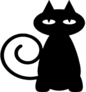

MiaouNetLes chats sur internet : un phénomène intemporel
contacter
Depuis l'aube des réseaux sociaux, une règle d'or régit le web : Internet appartient aux chats. Des tout premiers mèmes pixelisés aux mégastars de TikTok et d'Instagram, certains félins ont transcendé leur statut d'animaux de compagnie pour devenir de véritables icônes de la pop culture. Plongez dans le panthéon des boules de poils qui ont façonné l'humour et l'histoire du web. Les légendes fondatrices (Les pionniers des mèmes)
Grumpy Cat (Tardar Sauce)
Le phénomène : Avec son expression perpétuellement renfrognée due à un nanisme félin et une malocclusion dentaire, Tardar Sauce est devenue en 2012 le visage officiel du pessimisme amusant sur Internet. Son héritage : Des millions de mèmes, des livres best-sellers, un téléfilm de Noël et même sa propre statue de cire chez Madame Tussauds. Elle reste la reine incontestée du « Non ».
Nyan Cat
Le phénomène : Né en avril 2011, ce gif animé d'un chat gris au corps de Pop-Tart (une pâtisserie américaine) volant dans l'espace en laissant une traînée arc-en-ciel derrière lui a hypnotisé la planète entière. Son héritage : Accompagné d'une mélodie japonaise entêtante, Nyan Cat est l'un des symboles les plus purs de la culture web des années 2010, cumulant des centaines de millions de vues sur YouTube.
Keyboard Cat (Fatso & Bento)
Le phénomène : Bien que filmée en 1984 par Charlie Schmidt, la vidéo de Fatso jouant un air entraînant sur un synthétiseur n'est devenue virale qu'en 2007. Son héritage : Il est devenu le mème ultime pour ponctuer les vidéos de « fails » (échecs cuisants), jouant littéralement les gens hors de scène comme au théâtre. Les stars des réseaux sociaux modernes
Maru, le maître des boîtes
Le phénomène : Ce Scottish Fold japonais a conquis YouTube dès 2008 grâce à une passion simple mais universelle : se jeter dans des boîtes en carton beaucoup trop petites pour lui. Son héritage : Il a détenu le record Guinness de l'animal le plus vu sur YouTube avec plus de 325 millions de vues sur sa chaîne.
Lil Bub
Le phénomène : Petite chatte née avec plusieurs anomalies génétiques (nanisme, pattes courtes, absence de dents laissant pendre sa langue en permanence), Lil Bub a touché le cœur des internautes par sa douceur. Son héritage : Au-delà des mèmes, elle a permis de récolter des centaines de milliers de dollars pour les refuges animaliers dédiés aux animaux ayant des besoins spécifiques.
Smudge (Le chat de « Woman Yelling at a Cat »)
Le phénomène : En 2019, l'assemblage d'une scène de télé-réalité (une femme criant en pleurs) et d'une photo d'un chat blanc assis devant une assiette de salade avec un air confus et dégoûté est devenu le mème de l'année. Son héritage : Smudge est devenu l'incarnation parfaite du quiproquo et de l'incompréhension face à un drame exagéré.
Stepan, le chat flegmatique d'Ukraine
Le phénomène : Originaire de Kharkiv en Ukraine, Stepan s'est fait connaître sur TikTok et Instagram en posant accoudé à une table, le regard vide et blasé, devant un verre de vin ou un cocktail. Son héritage : Devenu un symbole de résilience pendant la guerre en Ukraine, il utilise aujourd'hui sa notoriété mondiale pour lever des fonds en faveur des animaux victimes du conflit.
Pourquoi les chats dominent-ils toujours Internet ?
Ce règne sans partage n'est pas un hasard : L'expressivité involontaire : Contrairement aux chiens qui cherchent à plaire, l'indifférence naturelle et les expressions stoïques des chats permettent aux humains d'y projeter n'importe quelle émotion ou blague. L'effet de surprise : Entre leur agilité légendaire et leurs moments de pure maladresse (les fameux cat fails), ils offrent un divertissement imprévisible et universel, compréhensible sans barrière de la langue.